There is a misplaced transparent pixel at the base of Sam's coat when he's
midstride:
To fix these pixels:
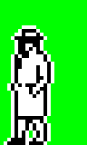
POKE 51223,247
POKE 51225,247
Men's shoes
There is a transparent pixel that should be blank at the bottom front edge of
the shoe in various animatory states of the policeman, the Fat Man, the man in
a bowler hat, and the man in a baseball cap:
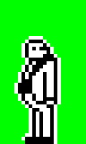
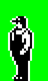
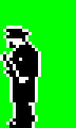
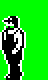
To make these pixels blank:
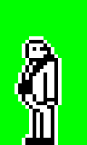
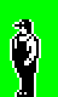
POKE 54830,253
POKE 54859,223
Gangster's knee
There are erroneous transparent pixels and a misplaced blank pixel in and near
the gangster's knee when he's midstride:
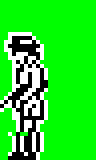
To fix these pixels:
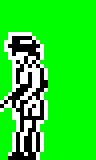
POKE 51819,233
Lana's waist
There are erroneous transparent pixels and extraneous blank pixels across and
near Lana's waist when she has her arm raised:
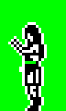
To fix these pixels:
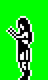
POKE 54144,124
POKE 55988,0
Fat Man's waist
There is a misplaced blank pixel near the Fat Man's waist when he's midstride:
To move this pixel to the right spot:
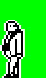
POKE 53300,211
Daisy's head
There is a transparent pixel that should be blank on top of Daisy's head:
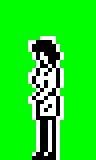
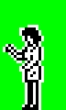
To make this pixel blank:
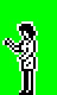
POKE 51789,131
Daisy's hand
There are transparent pixels that should be blank and also a misplaced blank
pixel on and near Daisy's hand when she's midstride:
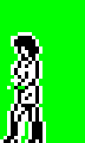
To fix these pixels:
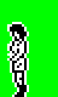
POKE 51284,233
POKE 51287,233
Ladies' arms
When Daisy and the girl with a pony tail have their arms raised, there is a
transparent pixel that should be blank under their hands, and another near
their armpits:
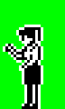
To make these pixels blank:
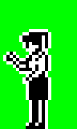
POKE 52871,203
POKE 54408,37
Ladies' waists
There are extraneous blank pixels near both Daisy's waist and the waist of the
girl with a pony tail when they are midstride:
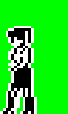
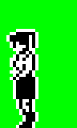
To remove these blank pixels:
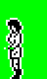
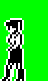
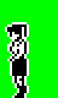
POKE 54354,250
Baseball cap man's face
There are extraneous blank pixels and transparent pixels that should be blank
in front of and on the face of the man in a baseball cap when he's midstride:
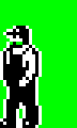
To fix these pixels:
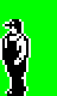
POKE 53444,241
POKE 53956,233
Broken banister
In the open doorways of no. 74, no. 31 and no. 19, a line of blank pixels can
be seen running through the banister at the bottom of the staircase: